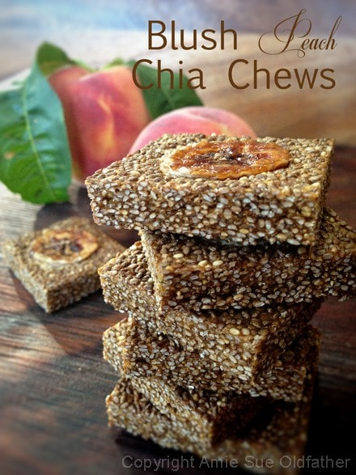

Blush Peach Chia Chews

~ raw, vegan, gluten-free, nut-free ~
Aztecs, Mayans, and Incans used chia as a staple of their diet as an energy food. Chia seeds were known as the “Indian Running Food” because runners and warriors would use them for sustenance while running long distances or during battle.
So whether you are on the run as an endurance athlete, a parent battling your children to pick up their dirty socks, or just running from class to class, you will find that the amount of energy per square centimeter in this treat is far greater than any energy bar on the market.
Do you hit a slump during the middle of the afternoon? Do your eyes feel tired and cumbersome as you are listening to a lecture on ……..Chia Chews just might help you feel more energized throughout the day and to at least remember the key points to that …… lecture. hehe
They contain essential fatty acids alpha-linolenic and linoleic acid, mucin, strontium, 30% protein, Vitamins A, B, E, and D, and minerals including calcium, phosphorus, (stops to take a breath) potassium, sulphur, iron, iodine, copper, zinc, sodium, magnesium, manganese, niacin, thiamine, silicon, and anti-oxidants.” (Source – Mountain Rose Herbs)
Deep down, we care about all of this… that’s why we are making our own healthy, raw foods… right? But during our busy, sometimes crazy, we don’t want to think about all of these things. Think of them as subliminal ingredients. They are working hard to “feed” your body what it needs.
Last year I made Blueberry Lavender Chia Chews and just fell in love with the chewy texture. I am not quite sure what to liken them to, but they are dense and chewy but not tough. And talk about a powerhouse of energy for the body. As you can see below, the ingredient list is short and the main body of this treat is chia seeds. All of those tiny seeds, packed into a 1″ square of energy, just bursting at the seams!
The number of peaches needed will all depend on the size of the fruit you buy. I used four large peaches. Always purchase extra. If you are not a fan of raw agave, I recommend using raw coconut nectar. Raw honey will remain too sticky in my opinion. Also, you can blend the chia seeds into a powder if you are opposed to the texture of the seeds.
Ingredients:
yields roughly 24 chia chews
- 3 3/4 cup peach puree
- 1/4 cup maple syrup
- 1 cup chia seeds
- 2 ripe bananas, sliced into coins
Preparation:
- In the blender or food processor, fitted with the “S” blade, combine the peaches and maple syrup. Blend to a puree. Pour into a large bowl
- Stir in the chia seeds, making sure to dissolve any lumps of chia seeds. Set aside for 30 minutes. This will allow the chia to thicken the puree.
- Pour the mix onto the teflex sheet that comes with the dehydrator. Spread 1/2″ thick.
- Place the banana slices on the chia batter in rows. When the chia chews are done, you will cut them into small squares and a banana slice should be in the center of each one.
- Dehydrate at 145 degrees (F) for 1 hour, then reduce temp to 115 degrees (F) for about 16 (+/-) hours.
- Flip the chews over about halfway through, remove the teflex sheet, and continue drying on the mesh sheet.
- I used a ruler and paring knife to cut the chews into small squares.
- Store in an airtight container. These freeze well.
Culinary Explanations:
- Why do I start the dehydrator at 145 degrees (F)? Click (here) to learn the reason behind this.
- When working with fresh ingredients, it is important to taste test as you build a recipe. Learn why (here).
- Don’t own a dehydrator? Learn how to use your oven (here). I do however truly believe that it is a worthwhile investment. Click (here) to learn what I use.